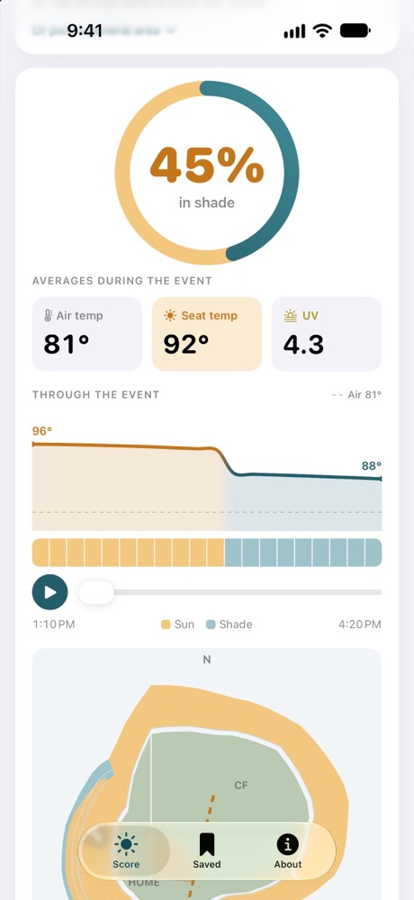
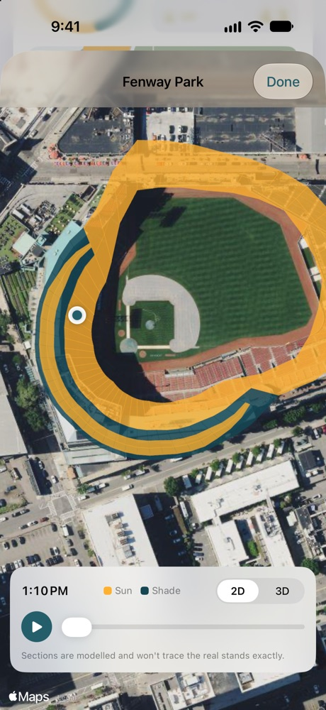
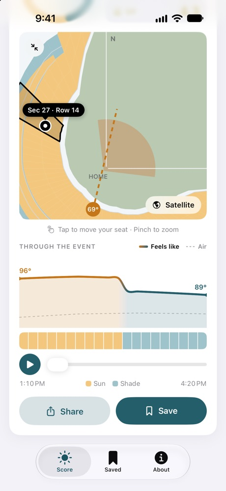
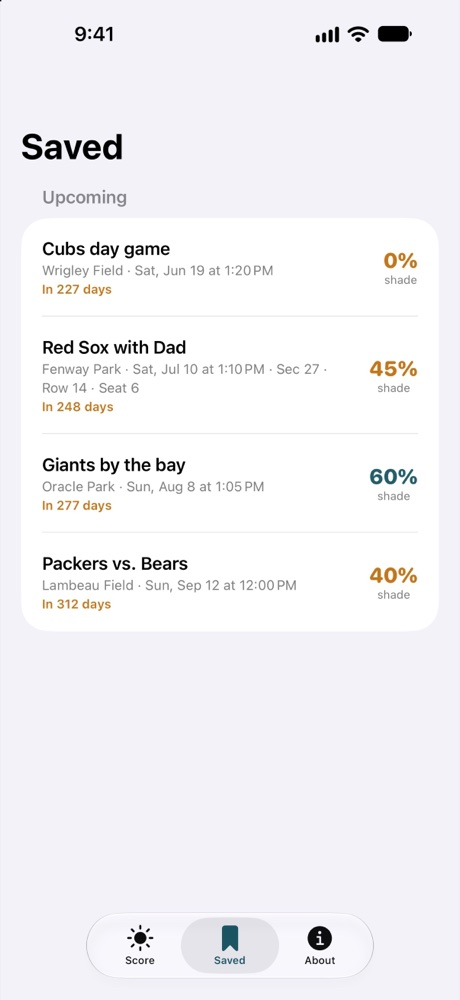
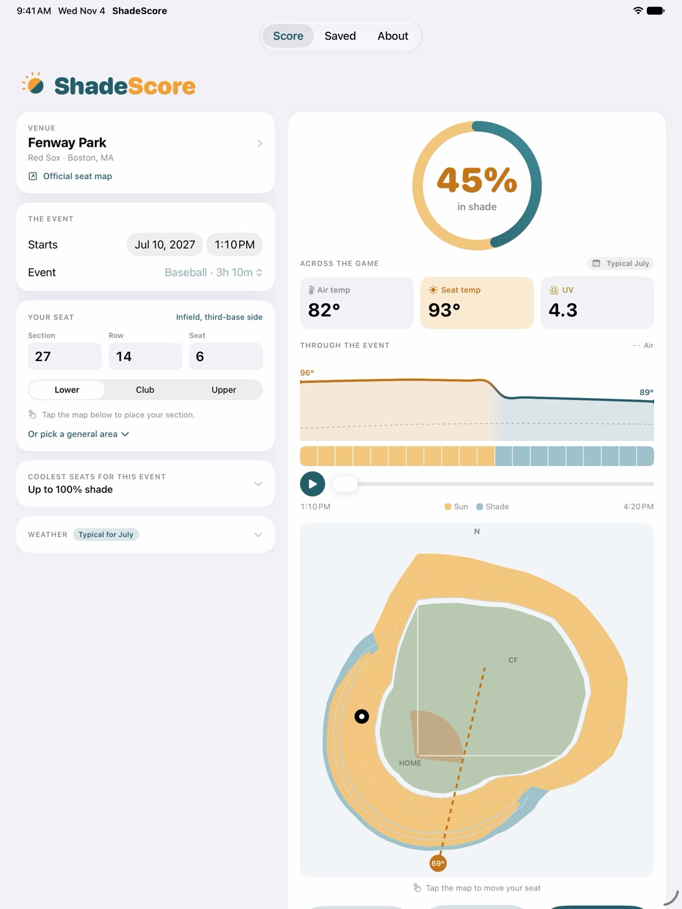

Free, simple, and nothing in the way
100% freeNo price, no subscription, no in-app purchases.
No adsNothing between you and your answer.
No sign-upOpen it, pick your stadium, done.
PrivateNothing collected or tracked. Works offline too.
What ShadeScore does
Three taps: pick a stadium, a start time and your seat. ShadeScore works out where the sun will be through the whole game and whether the stand across the field, the deck above you or the rows behind you will block it. You get one number, how much of the game you'll spend in shade, plus the air temperature, what your seat will feel like, and the UV.
- Type your section, row and seat, or tap the map
- Press play and watch the shade sweep across the stands
- See the coolest seats for your exact date and time
- Save games, share your seat's score, and find the stadiums near you
- All 30 ballparks, all 30 pro football stadiums and 24 college stadiums
On iPad too

Shaded seats at every stadium
Shade maps and the shadiest sections for all 84 ballparks and football stadiums: find your stadium.
Support
Questions, a shade line that looks wrong, or a stadium you'd like added: shadescoreapp@gmail.com
If a stadium looks off, tell me which one and roughly where you were sitting. It helps me fix the data.
- Shade is worked out from a model of each stadium, so a result near 50% means the shade line will be close to your seat.
- Games in the next 10 days use a real forecast from Apple Weather where available; later games use typical weather for the date. The app always says which.
- "Nearest to me" uses your approximate location once, on your phone. It's never sent anywhere.
- UV figures are general guidance, not medical advice.